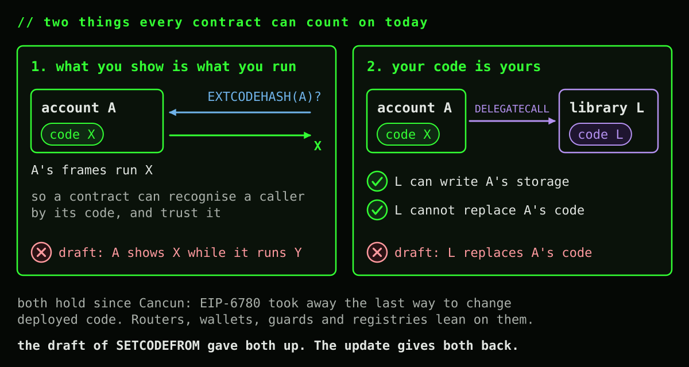
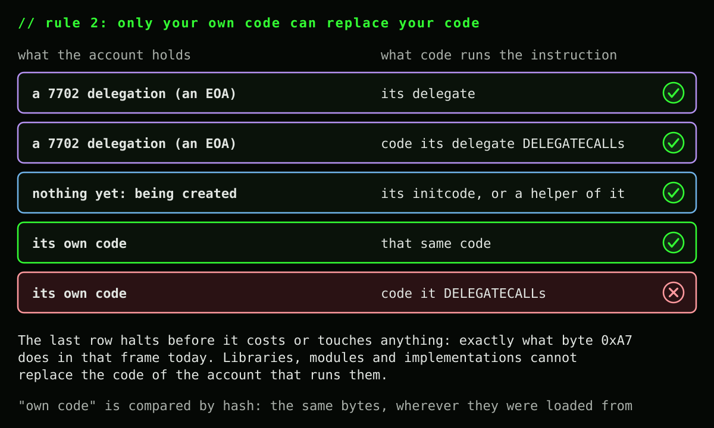
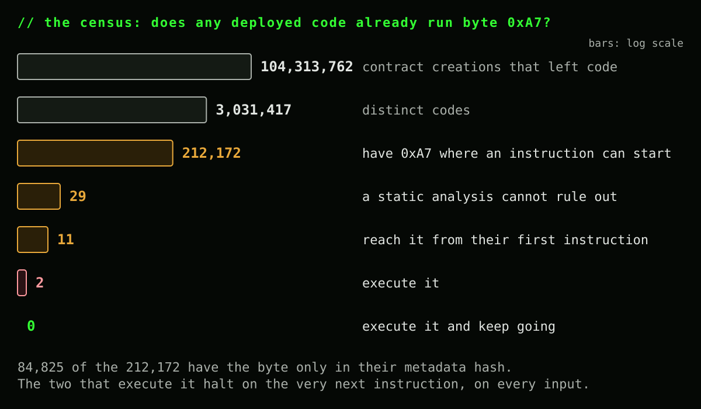
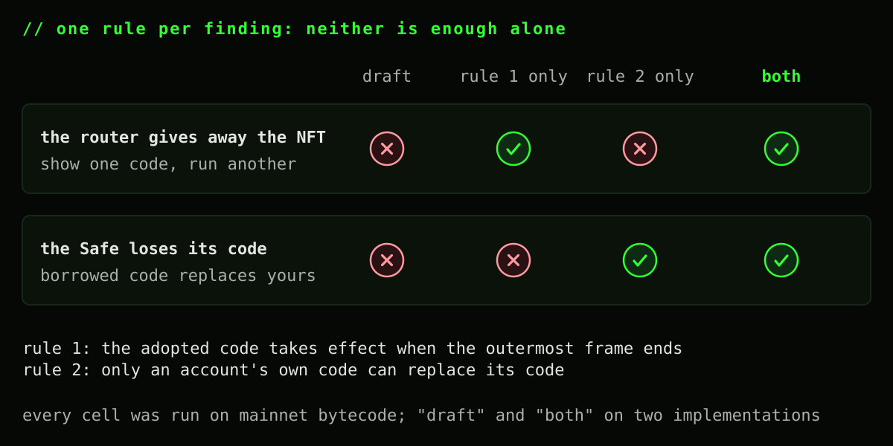

SETCODEFROM points an account's code hash at code another contract already deployed. The draft was generous about it: any account could adopt, as often as it liked, from any code running on its behalf, and the new code showed up the instant the instruction ran.
That generosity is what the menu of account modes was built on. It is also where the trouble was. We reviewed the draft end to end, prototyped the alternatives, and ran the worst cases against bytecode that is on mainnet today. Two things came out of it, and each one gets a rule.
Nothing here is at risk today: SETCODEFROM is a draft and is not active on mainnet. The fix goes into the EIP, not into anybody's contracts.
> Two things you can count on today
Since Cancun, EIP-6780 lets SELFDESTRUCT delete a contract only in the transaction that created it. That closed the last door for changing deployed code, and two quiet guarantees followed.

- What you show is what you run. If
EXTCODEHASH(A)says X, then A's frames are executing X. EIP-7702 refused to letEXTCODEHASHfollow delegations for exactly this reason: an account must not be able to "temporarily masquerade as having a particular codehash". - Your code is yours. A library, a module or a proxy's implementation runs with your storage and your balance, and still cannot swap out your code.
Nobody wrote these down as consensus rules. Contracts simply started leaning on them.
> Finding 1: show one code, run another
Under the draft, the frame that runs SETCODEFROM keeps executing the code it loaded, while everybody else already sees the adopted code. So for the rest of that frame the account wears one code and runs another.

sudoswap's router is a clean example of who gets hurt. pairTransferNFTFrom moves an NFT out of any wallet that approved the router, as long as the caller is a pair. "Is a pair" is decided by the factory, which copies the first 73 bytes of the caller's runtime code and compares them with the clone it would have deployed. A perfectly sound check today.
sudoswap is not special here. ERC-1167's reference isClone reads code the same way, and so does any check of the form "is this caller one of my clones". Rule 1 below closes it: the adopted code is written only when the attacker's outermost frame ends, so while the router asks, the factory still sees the attacker's own code.
> Finding 2: code you borrow replaces your code
The draft also let borrowed code adopt for its borrower, and said so: "this EIP allows delegated execution to update the caller's account code". That is how proxies were going to graduate. It is also how a contract loses its code to something it merely ran.
![Figure 3: a Safe's own code is a 171-byte proxy. A module asks it to run a payload: the Safe runs the Safe singleton by DELEGATECALL, and the singleton runs the payload by DELEGATECALL, so all three run as the Safe. The payload executes SETCODEFROM(T). Under the draft the Safe's code becomes T while owners, threshold, modules, the singleton slot and the balance stay the same, and the module call reports success. With rule 2 the instruction halts, because the payload is not the Safe's own code: the Safe keeps its proxy and the module call reports failure.](figures/f3-borrowed-code.svg)
A Safe makes the point. Its account holds 171 bytes of proxy code and runs everything else by DELEGATECALL: the singleton, and whatever payload its owners or an enabled module ask for through the DelegateCall operation.
Why that is worse than it sounds:
- The code is what enforces the owners. The proxy hands every call to the singleton, and the singleton is what checks owners and threshold. Once the code is T, the Safe does whatever T says, and whoever wrote T controls the Safe.
- Nothing a guard watches has moved. A payload run this way can already rewrite a Safe's storage. That is what happened to Bybit in February 2025: the payload rewrote the slot that points at the singleton. Here owners, threshold, modules, balance and that very slot are exactly as they were, so a guard that compares them after execution has nothing to object to.
- There is no way back. The owners can write storage back. Only the new code can change the code again.
- It is not about Safes. Every contract that runs borrowed code is exposed the same way, and the next section shows that is most of them.
How rule 2 fixes it. SETCODEFROM first asks whether the code running in the frame is the account's own code, compared by hash. In the Safe the frame runs the payload, not the 171-byte proxy, so the instruction halts before it charges any gas, exactly what 0xA7 does there today. The module call reports failure and the Safe keeps its code. Rule 1 alone would not help: the code would still be replaced, only later, when the Safe's outermost frame ends.
> Who runs borrowed code?
Before changing anything we wanted to know what is deployed. We scanned the code left by contract creations on mainnet up to block 26,430,999, keyed on the deployed bytes, and first asked how many of them run code they borrow.
![Figure 4: who runs borrowed code. 62.6 % of the 104,313,762 contract creations that left code can reach a DELEGATECALL or CALLCODE: at least 49.2 % of all creations are ERC-1167 minimal clones, 45 bytes that forward every call to one fixed implementation, and 13.4 % are other code, Safe and other proxies, wallets and a long tail. 37.4 % never borrow code. Under the draft each one's code is only as fixed as what it borrows: a clone's implementation and whatever that can be made to run, every payload a Safe is handed, the next implementation a proxy's admin installs. With rule 2 only the account's own code can replace it.](figures/f4-delegatecall.svg)
Almost two thirds of everything ever created, and minimal clones alone are half of it. The count says a DELEGATECALL is reachable, not that anyone can pick its target. But that is the point. Under the draft, "my code never changes" stops being a property of the contract and becomes a property of everything it borrows. With rule 2 it is a property of the contract again.
> Rule 1: record now, switch when your outermost frame ends
SETCODEFROM no longer changes the code hash. It records a pending one, and the write happens when the account's outermost frame ends successfully. Until then the account is exactly what it was, to itself and to everybody else.
![Figure 5: the deferred effect. Account A has an outermost frame, and inside it an inner frame, reached by DELEGATECALL or by someone calling A back. SETCODEFROM in the inner frame only records the new code hash. Until A's outermost frame ends, every observer sees the old code through EXTCODEHASH, EXTCODECOPY and calls into A. When the outermost frame ends successfully the code hash is written. A revert or a halt drops the recording; of several recordings the last one that was not reverted is written; a creation follows the same rule.](figures/f5-deferred.svg)
- Outermost, by address. A frame entered by
DELEGATECALLis still the caller's frame, and so is a re-entrant call. If the write waited only for the frame that ran the instruction, control would return into another frame of the same account still running the old code. - Not the end of the transaction. Later calls in the same transaction, and later frames of an 8141 frame transaction, run the new code. Migrate in one call and initialise in the next still works.
- Same instruction otherwise. The result flag, the gas table and "the last one wins" are exactly as merged. Only the moment of the write moved.
- Creation is the same rule. Initcode records, and the code appears when the creation completes. A call back into the account under construction runs no code, as for any other contract being built.
> Rule 2: only your own code can replace your code
If the account already holds code, and the code executing in the frame is not that code, SETCODEFROM halts. It halts before any gas is charged and before the source is touched, which is precisely what 0xA7 does in that frame today.

The idea is not new. EIP-6913, the withdrawn SETCODE proposal, had this clause in a stricter form, for the reason we care about: "Account code not containing the SETCODE operation can be safely assumed to be immutable". The draft of SETCODEFROM cited it as the thing it chose not to do. Now it does it.
The rule looks at the code an account holds, not at what kind of account it is. With 8141 frame transactions any account can send, so "EOA" and "contract" only describe that code. An account with no code, or with nothing but a 7702 delegation, has no code of its own to protect: everything that runs in it is borrowed. The rule leaves it alone, and its delegate is how it migrates.
> Does any deployed code already run 0xA7?
With rule 2, a contract that exists today can change its code only by executing 0xA7 in its own code. So the census asked a second question: does any deployed code already run that byte? If one did, giving the byte a meaning would change that contract.

The answer is no. Two codes execute it, and both halt on the very next instruction whatever you send them, as they halt on 0xA7 today.
That left one question open: 6,650 codes have the byte right behind a jump destination that no constant jump reaches, so only a jump whose target is computed from data could land there. Nobody had looked at them, so we analysed every one:
| What happens | Codes | Contracts |
|---|---|---|
| Halt or revert right after the byte, which throws away any adoption | 6,007 | 6,506 |
| Every jump goes to a fixed destination, so nothing lands on the byte | 637 | 767 |
| Checked by hand: the byte sits inside data | 6 | 29 |
- Four MEV bots let only their hard-coded owner steer their jump tables, and those tables can't land on the byte with a stack it can run on.
- A Boson Protocol facet calls through an internal function pointer it keeps in storage. Its verified source writes that pointer only in its initializer, with its own hash functions.
- An older Solidity contract (24 copies, 20 since destroyed) has too many paths for the analysis to finish. In the 12 million states it explored, every jump went to a fixed destination.
- Value: the six hold no ETH. All 7,289 addresses together hold about 5 ETH, 197 WETH and 0.9 million USDC, nearly all of it in the first row.
- Whose problem: the contract's, not SETCODEFROM's. A contract that lets a stranger pick its jump target is already broken today: that stranger could jump past every check in it. SETCODEFROM would only make that bug worse, and none of these lets a stranger pick.
We also replayed real transactions on an archive node: 223 of them, from the 25 contracts that took longest to rule out, made 23,187 jumps, and none went into the data where the byte sits.
> Each rule has its own job
It is tempting to ship one rule and call it done. We ran all four combinations on the two mainnet cases, and neither rule covers for the other.

- The attacker in finding 1 adopts from its own code, so rule 2 has nothing to say. Only the deferred effect stops it: the router still sees the attacker's code, and once the attacker really holds the pair's code, it is the pair's code that runs.
- The Safe in finding 2 is not fooled about anybody's identity. With rule 1 alone its code is still replaced, just a moment later, when its outermost frame ends. Only the own-code rule stops the payload.
> What you can no longer do
Four things go, and the first one hurts.
![Figure 9: gone and stays. Gone: proxies graduating into their implementation's code; a library, module, facet or payload adopting for an account that holds code; reading your new code hash right after adopting; adopting and then calling yourself in the same frame. Stays: a cheap copy of deployed code from initcode at a flat 9300 or 12200 gas; retiring the key through an EOA's delegate, modules included; a code account that still runs on your key through 8141 frame transactions; upgrading in place from the template's own code; the result flag and the gas table.](figures/f9-gone-and-stays.svg)
- Proxies do not graduate. The account modes article said "Proxies can graduate into this too". Not anymore. A proxy, a clone or a Safe adopting through its implementation and an implementation hijacked through a
DELEGATECALLare the same thing to the EVM, so closing one closes the other. They keep their ordinary upgrade paths. A proxy deployed after the fork can still carry SETCODEFROM in its own code, behind its own admin check. - Borrowed code does not adopt for an account that holds code. External library functions,
DELEGATECALLpayloads, facets and modules cannot do it for you. The upgrade function has to be in your own bytecode. That includes a migrated account: once you hold a template, the template's modules cannot swap it. - You cannot read your new code in the same frame.
EXTCODEHASH(address(this))still shows the old one. Check the source right before the instruction, or let your caller check afterwards. - Adopt, then call yourself, runs the old code. Write the template's storage before adopting, as both examples in the EIP already do, or initialise in a second call.
Everything on the original menu except proxy graduation is still there. One thing to keep in mind when you write a template: a function guarded by "only myself" is still reachable by code you run through DELEGATECALL, because that code can call you as you. Rule 2 stops borrowed code from running the instruction, not from asking your own code to.
> What this does not fix
Code that an EOA's delegate runs can still adopt for it, for good. What such code can take is not new: under EIP-7702 a delegate, or a module it runs through DELEGATECALL, can already move everything the account holds. What is new is that the takeover can be made permanent. Today the key can always sign a new delegation and walk away from a bad delegate. Once the account holds adopted code, EIP-7702 ignores the key's delegations and EIP-3607 rejects its transactions, so the key cannot undo it. That is the price of letting key-less accounts migrate, and it deserves its own decision.
> Cheat sheet
![Figure 10: the draft and the update side by side. The new code takes effect at the instruction in the draft, and when the account's outermost frame ends with the update. An account with code adopting from that code: allowed in both. An account with code adopting from code it borrows: allowed in the draft, halts with the update as 0xA7 does today. A 7702 account through its delegate: allowed in both. Initcode: adopts and is visible at once in the draft, visible when the creation completes with the update. Result flag, gas table and last one wins: unchanged. Mempool tracking of code with DELEGATECALL: needed in the draft, gone with the update.](figures/f10-cheat-sheet.svg)